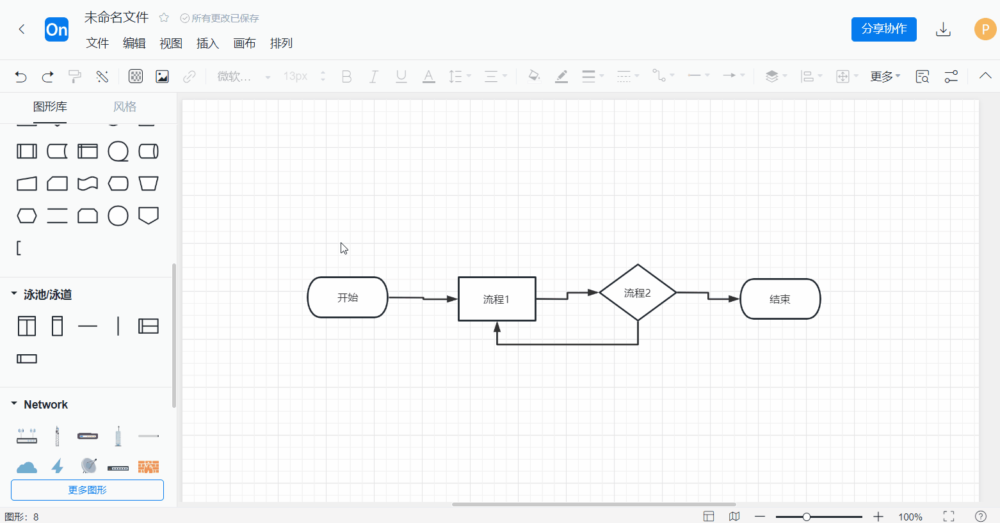

ProcessOn 从零上手：注册、作图、美化、协作一条龙
第一次接触 ProcessOn？这篇教程带你从注册到画出第一张像样的流程图，覆盖文件管理、一键美化、协作分享全流程。
你手里可能有一堆待画的流程图：需求评审要画业务流程、研发要画系统架构、运营要画活动路径图……ProcessOn 把这些都搬到了浏览器里，不用装任何客户端，打开网页就能画。学完这篇，你能独立完成一张从空白到成型的流程图，知道怎么整理文件、怎么一键美化、怎么和同事协作。
准备
ProcessOn 是纯 Web 应用，不需要下载安装包——任何一台电脑，浏览器打开官网就能用，需要额外资源时也可以从下载通道获取。注册方式支持手机号、邮箱、微信三种，推荐用手机号注册，后续协作通知、模板收益提现都依赖这个绑定。
首次注册送个人版七天试用，试用期内所有高级功能全开。七天后降级到免费版，每月限三张图，个人会员月费二十多元、年费一百多元，团队版按人头计价（每人每年二百五十九元起，十人以上可以找官方要优惠）。如果你只是偶尔画一张图，免费版够用；如果是每周都要出图，个人会员值得开。
第一步：新建第一张流程图
登录后你会进入个人文件页——这是你的"ProcessOn 桌面"，所有文件都在这里。点击左上角「新建」按钮，选择「流程图」，或者直接在模板市场搜一个接近的模板克隆下来改。

画布打开后，左侧是形状库——按类别分组：基础形状（矩形、椭圆、菱形）、BPMN 业务流程符号、UML 图、网络图组件等等。左侧面板顶部还有一个搜索框，直接搜"审批"、"数据"这类关键词，能快速定位到需要的形状。
第二步：拖拽形状、连接节点
画流程图的核心操作只有两个：拖形状、连节点。
把形状从左侧面板拖到画布上，鼠标悬停到已放置的形状上时，会自动弹出方向箭头——点箭头就能沿对应方向放置下一个形状，连线自动生成。不需要手动画连接线，ProcessOn 的智能连线会帮你把两个节点对齐、自动排布。

双击形状可以编辑文字内容，文字框里支持换行、可以改字体大小和颜色。画的时候不用纠结对齐、间距这些细节——先把节点放上去、把文字填进去，结构画完整再回头调美观。
第三步：一键美化和配色
这是 ProcessOn 最省事的功能。内容画完后，先做结构级整理：选中多个节点，用顶部工具栏的「对齐」「分布」「匹配大小」按钮把它们排列整齐。这些按钮旁边都有图标，一眼能看懂。
然后点上方「编辑」菜单栏里的「美化」按钮——或者顶部工具栏直接找那个魔法棒图标。一键美化会自动调整整张图的间距、连线走向、形状对齐，瞬间从"手动画的"变成"专业软件画的"。

美化完再套配色方案：左侧「风格」面板里有二十多套预置配色，商务蓝、清新绿、深色主题、彩虹配色……点一下就应用到全图。配色有两个原则：语义优先（判定节点用警示色、起止点用不同颜色区分）、数量克制（全图主色控制在三种以内）。想深入研究编辑器的其他高级功能和参数细节，可以去processon文档翻一翻。
第四步：保存、分享和文件管理
ProcessOn 是云端自动保存——你每改一个字，右上角都会显示"已保存"。关闭浏览器不影响，下次登录文件还在。
文件多了之后要及时用文件夹管理：个人文件页顶部点「新建文件夹」，按用途或项目建分层结构——顶层按"个人笔记""工作流程""项目归档"分，子文件夹按具体项目命名，文件名里带日期方便日后查找。不要怕麻烦，从第一张图开始就养成归档习惯，否则三个月后你的根目录会塞满几百个文件，找一张老图要翻半天。
分享协作是 ProcessOn 的强项：点击右上角「分享」按钮，可以生成分享链接（任何人可查看/仅限指定人可编辑），也可以直接 @协作者。被邀请的人如果还没注册，ProcessOn 会发邮件引导他注册。多人实时协作时，每个人的光标颜色不同，可以看到同事正在哪个节点编辑。
新手最容易翻的三个坑
坑一：文件越堆越乱，找不到以前画的图。别等文件堆到几十张才开始整理——从第二张图开始就用文件夹归档。典型的三层结构够用了：顶层按"用途"分，子文件夹按"项目"分，文件名带日期。
坑二：一键美化时机不对，白忙活。一键美化建议在内容全部画完、结构检查无缺漏之后执行。中途执行了美化，然后继续加新节点、改连线，之前的美化效果会失效。顺序是：画完内容 → 对齐分布 → 一键美化 → 配色 → 重点节点手动调整。
坑三：分享权限没给对，同事改了你的图你才发现。分享时有两个权限选项要确认：查看权限（只看不能改）和编辑权限（可以修改）。给同事协作时选编辑没问题，但分享给客户或上级看时，一定要选查看权限，免得文件被误改。分享链接也可以随时关闭或更换密码。
往下还能玩什么
画流程图只是 ProcessOn 的冰山一角。试试思维导图模式（支持鱼骨图、组织结构图），模板市场里花几块钱就能克隆一份职场总结模板——自己发布模板被别人付费克隆还能赚分成，账户余额满五十元就可以申请提现，一到三个工作日到账。团队版能把所有图沉淀成组织资产，离职员工的图不会跟着走。
资料维护这块，除了直接去官网翻帮助中心，如果你习惯在代码托管平台上收藏工具资料，这套资料也同步备份在了 GitHub、Gitee、GitCode 上，选哪个顺手就用哪个。